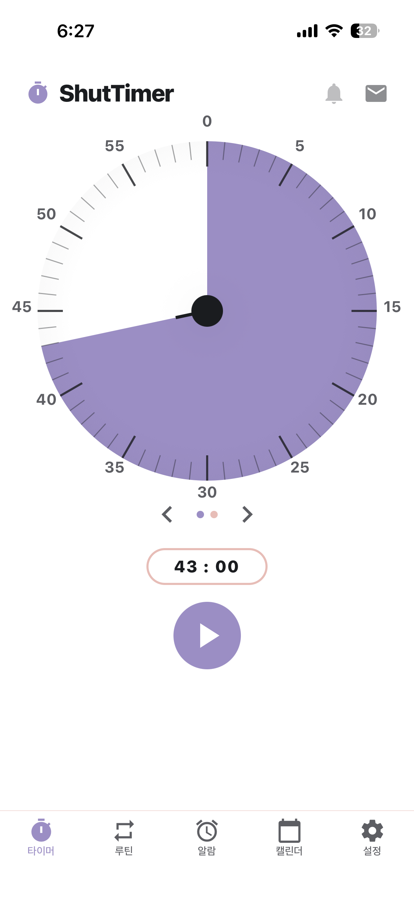
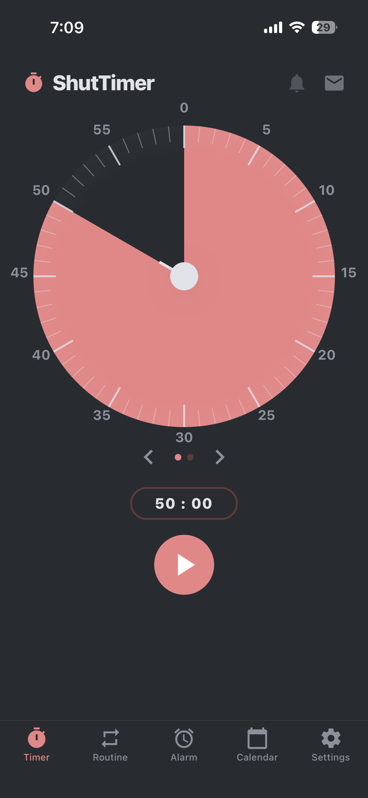
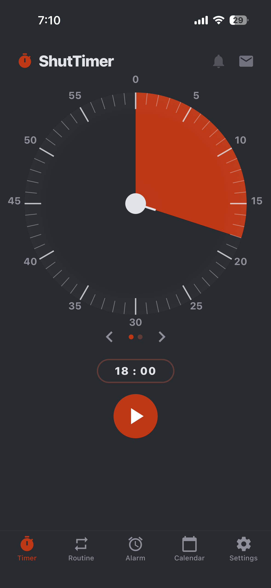
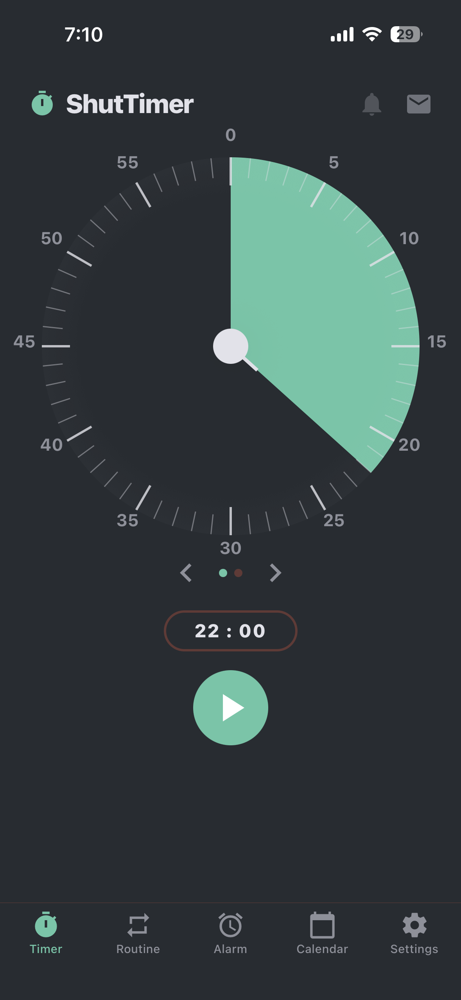

탭, 흔들기, 사진 촬영 — 알람 해제와 동시에 기상
루틴이 시작됩니다.Tap, shake, or snap a photo to dismiss — and your morning routine begins right away.轻点、摇一摇或拍照解除闹钟，晨间流程同时开启。タップ・シェイク・写真でアラームを解除。その瞬間、朝のルーティンが動き出します。
AtticLab는 ShutTimer를 만드는 iOS 스튜디오입니다.AtticLab is the iOS studio behind ShutTimer.AtticLab 是打造 ShutTimer 的 iOS 工作室。AtticLab は ShutTimer を手がける iOS スタジオです。
ShutTimer는 탭, 흔들기, 사진 촬영 방식으로 알람을 해제하고 자동 루틴을 실행하는 알람 앱입니다.ShutTimer is an alarm app you dismiss by tapping, shaking, or taking a photo — then it runs your routine automatically.ShutTimer 是一款闹钟应用，通过轻点、摇晃或拍照解除闹钟，并自动执行你的流程。ShutTimer は、タップ・シェイク・写真でアラームを解除し、ルーティンを自動で実行するアラームアプリです。
알람을 맞추고, 미션으로 깨어나고, 루틴이 알아서 흐릅니다. 아침에 머리 쓸 일은 하나도 없습니다.Set the alarm, wake up with a mission, and let the routine flow. No thinking required in the morning.设好闹钟，用任务唤醒自己，流程自动运行。早晨无需动脑。アラームを設定し、ミッションで目覚め、ルーティンが自動で流れる。朝に頭を使う必要はありません。
시간과 해제 방식을 고르면 끝. 요일별 반복도 한 번에.Pick a time and a dismiss method — done. Set weekly repeats in one tap.选好时间和解除方式即可，按星期重复也一次搞定。時間と解除方法を選ぶだけ。曜日ごとの繰り返しもまとめて設定。
탭, 흔들기, 사진, 계산, 타이핑 — 알람을 해제하는 다섯 가지 방법.Tap, shake, photo, math, typing — five ways to dismiss your alarm.轻点、摇晃、拍照、计算、打字——五种解除闹钟的方式。タップ、シェイク、写真、計算、タイピング——アラームを解除する5つの方法。
해제와 동시에 여러 단계의 타이머 루틴이 자동으로 흐릅니다.The moment you dismiss it, a multi-step timer routine flows automatically.解除的同时，多阶段计时流程自动开始。解除と同時に、複数ステップのタイマールーティンが自動で流れます。
꺼지기만 하는 알람은 그만. ShutTimer는 끝까지 깨우고, 아침을 이어 붙입니다.No more alarms that just turn off. ShutTimer keeps you up and carries your morning forward.别再用一关就完事的闹钟。ShutTimer 把你彻底叫醒，并衔接起整个清晨。ただ消えるだけのアラームはもう終わり。ShutTimer は最後まで起こし、朝をつなげます。




YOLO 객체 탐지로 지정한 물체를 인식합니다. 예를 들어 세면대를 촬영 대상으로 설정하면, 아침에 실제로 세면대 앞에 가서 사진을 찍어야 알람이 해제됩니다. 촬영한 사진은 기기에만 저장되며 외부로 전송되지 않습니다.It recognizes a target object using YOLO object detection. For example, if you set the sink as your target, you have to actually walk up to the sink and take a photo in the morning to dismiss the alarm. Photos are stored only on your device and never sent anywhere.它通过 YOLO 物体识别来检测你指定的物体。例如把洗手台设为目标后，早上必须真正走到洗手台前拍照才能解除闹钟。照片只保存在设备本地，不会上传到任何地方。YOLO 物体検出で指定した物体を認識します。たとえば洗面台を対象に設定すると、朝に実際に洗面台の前へ行って写真を撮らないとアラームは解除されません。撮影した写真は端末内にのみ保存され、外部に送信されることはありません。
ShutTimer는 사용자 데이터를 수집하지 않습니다. 모든 알람 설정, 루틴, 기상 기록은 기기 내에만 저장됩니다. 앱 삭제 후 재설치 시에도 Keychain을 통해 동일 기기에서 복원할 수 있습니다.ShutTimer collects no user data. Every alarm, routine, and wake-up record is stored only on your device. Even after deleting and reinstalling, you can restore everything on the same device via the Keychain.ShutTimer 不收集任何用户数据。所有闹钟设置、流程和起床记录都仅保存在设备本地。即使删除后重新安装，也可通过钥匙串在同一设备上恢复。ShutTimer はユーザーデータを一切収集しません。すべてのアラーム設定・ルーティン・起床記録は端末内にのみ保存されます。アプリを削除して再インストールしても、Keychain を通じて同じ端末で復元できます。
ShutTimer는 무료로 다운로드할 수 있습니다. 기본 알람 및 미션 기능은 무료이며, 일부 프리미엄 기능(루틴 단계 확장, 통계 히스토리 등)은 인앱 구매로 이용할 수 있습니다.ShutTimer is free to download. Core alarm and mission features are free, while some premium features (extra routine steps, full stat history, and more) are available via in-app purchase.ShutTimer 可免费下载。基础闹钟和任务功能免费，部分高级功能（扩展流程步骤、统计历史等）可通过应用内购买使用。ShutTimer は無料でダウンロードできます。基本のアラーム・ミッション機能は無料で、一部のプレミアム機能（ルーティンのステップ拡張、統計履歴など）はアプリ内課金でご利用いただけます。
알람이 울리는 순간, 앱은 선명한 화면으로 당신의 주의를 집중시킵니다. 미션을 완료한 후에는 차분한 색감과 여백이 자연스럽게 루틴으로 안내합니다.The moment the alarm rings, a bold, vivid screen grabs your attention. Once the mission is done, calm colors and generous space guide you naturally into your routine.闹钟响起的瞬间，鲜明的界面牢牢抓住你的注意力。完成任务后，沉静的色彩与留白自然地引导你进入流程。アラームが鳴った瞬間、くっきりとした画面が注意を引きつけます。ミッションを終えると、落ち着いた色合いと余白が自然とルーティンへと導きます。
내일 아침, 알람이 꺼지는 순간부터 하루가 달라집니다.Tomorrow morning, your day changes the moment the alarm goes off.明天清晨，从闹钟响起的那一刻起，一天就会不一样。明日の朝、アラームが鳴るその瞬間から一日が変わります。
App Store에서 다운로드Download on the App Store在 App Store 下载App Store でダウンロード